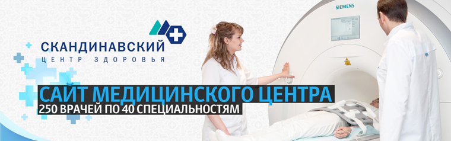

Сайт Скандинавского Центра Здоровья

- Форма записи на прием к врачу, занятие в реабилитационно-оздоровительном комплексе, тренировку или процедуру в Fitness & SPA с прямой и обратной зависимостью между услугой, специалистом, днем и временем приема.
- Каталог медицинских услуг (50+) с быстрым доступом с главной страницы через всплывающие контекстные меню у разделов.
- Цветовое кодирование основных («Диагностика», «Лечение», «Амбулаторная хирургия», «Эстетика» — голубой) и дополнительных видов услуг («Реабилитационно-оздоровительный комплекс», Fitness & SPA — зелено-оранжевый).
- Детальная страница услуги со списком специалистов, ценами и фотогалереей. Форма записи на прием к выбранному врачу с автозаполнением полей.
- Раздел Fitness & SPA с фотогалереей и 3D туром по аквазоне и тренажерному залу, списком инструкторов и расписанием занятий.
- Форма заявки на покупку карты, абонемента, разовое посещение, индивидуальную тренировку или экскурсию в Fitness & SPA.
- Каталог из 250 врачей с фильтром по 40 специальностям.
- Детальная страница специалиста с фото, описанием квалификации, фотогалереей дипломов и наград, отзывами пациентов, расписанием приема на 2 недели, формами «Записаться на прием» и «Оставить отзыв».
- Импорт цен на услуги по всем разделам из Excel-файла.
- Сквозной блок о программах комплексного обслуживания для частных лиц («Стандарт», «Стандарт Дент» на 6 месяцев или год) на страницах услуг. Форма заявки на заключение договора по выбранной программе.
- Ежедневный импорт расписания врачей из Excel-файла с указанием Ф. И. О. врача, специальности, номера строения и кабинета, даты и времени приема.
- Список акций с автоматической деактивацией предложений, срок действия которых закончился.
- Сервис скачивания внутренних документов центра по одному или архивом. Ссылки на действующие законы, определяющие порядок предоставления медицинских услуг, в системе КонсультантПлюс.
- Раздел «О нас» с историей центра (таймлайн с 1948 года), фотогалереей кабинетов, лабораторий и залов, списком страховых компаний-партнеров.
- Статьи для пациентов с фильтром по категориям («Косметология», «Маммология», «Массаж», «Плазмаферез», «Пластическая хирургия» и другие).
- Вопросы и ответы с фильтром по темам («Амбулаторно-поликлиническое обслуживание», «Диагностика», «Оперативное лечение», «Фитнес и SPA») и форма «Задать вопрос».
- Отзывы пациентов о центре и об отдельных специалистах. Форма «Оставить отзыв».
- Страница «Вакансии» с формой «Отправить резюме».
- Новости с фильтром по годам и формой подписки. Автоматическая рассылка свежих новостей.
- Форма заказа обратного звонка.
- Необычная для отрасли Application Style навигация.
- Адаптивный дизайн для 4 разрешений (сайт перестраивается под разные устройства).
 bestclinic.ru
bestclinic.ru
 ola.ru
ola.ru hk-sales.ru
hk-sales.ru nytek.ru
nytek.ru